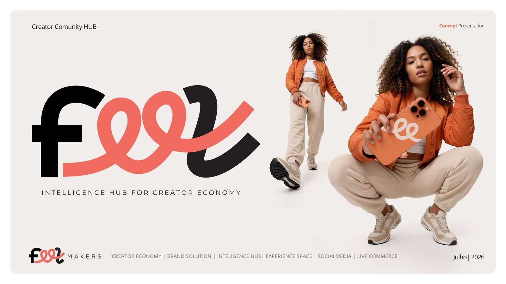

Você já viu a visão. Hoje é sobre a entrega.
A pergunta desta conversa não é se a ideia é boa. É como ela se sustenta. Este plano responde três coisas:
Não precisamos provar que a Feel será enorme. Precisamos provar que ela se sustenta.
Crescimento é hipótese. Sustentação é engenharia — e engenharia se demonstra com números simples, não com promessas.
Cada ambiente tem uma função. Todos geram receita.
Infraestrutura modular: abrimos por fases, ativando ambiente por ambiente conforme a receita entra — sem obra pesada, sem estoque.
A Feel não entra como lojista. Entra como infraestrutura do shopping.
Uma praça de alimentação não existe para pagar aluguel — existe para aumentar permanência e valorizar o empreendimento inteiro. A Feel é isso, para atenção e conteúdo.
Quanto custa operar, sem maquiagem.
Números redondos, errando para cima. Operação enxuta: os sócios operam o espaço na primeira fase — sem estoque, sem obra pesada.
Como o espaço paga a própria existência.
Duas receitas de balcão, em volume mínimo, cobrem quase todo o custo fixo. Elas não dependem de escala — dependem de agenda.
Com o espaço quase vazio, a conta quase fecha. Eventos, marcas e produção entram como margem — não como sobrevivência.
Seis fontes. Nenhuma aposta única.
Contrato do hub, ativações e participação em resultados.
Pacotes com creators, live shopping, conteúdo patrocinado.
Temporadas patrocinadas, brand experience, mídia no hub.
Cowork, estúdios, academy e programas de aceleração.
Locação, ingressos, workshops, lançamentos e pop-ups.
Podcasts, foto e vídeo, UGC para marcas, distribuição.
Três fases. Cada uma com meta e gatilho.
Estúdios, cowork e cinco lojistas fundadores. Sócios operando, custo enxuto.
Marcas, retail media e programação recorrente de eventos e temporadas.
Modelo documentado e replicável — o Shopping Boa Vista é o passo natural.
Revisão trimestral com a administração: se a meta da fase não vier, o módulo encolhe, não quebra — menos ambientes ativos, menos custo, mesma operação.
Não pedimos que o shopping banque. Pedimos que o contrato acompanhe a curva.
Você nunca fica no escuro.
Sessões e horas vendidas por mês.
Eventos, gravações e workshops realizados.
Visitas ao hub e tempo no shopping.
Conversão rastreada nas lojas parceiras.
Dados abertos para a administração, revisados juntos a cada trimestre — os mesmos indicadores que o shopping já usa para avaliar experiência.

O Patteo não ganha mais um lojista. Ganha o lugar onde a cidade cria.
O custo está no papel. A receita base não depende de milagre. E a rota tem gatilhos. Vamos desenhar os termos da implantação juntos?